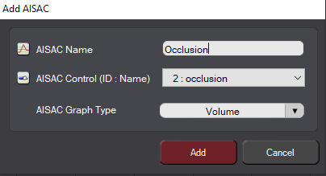
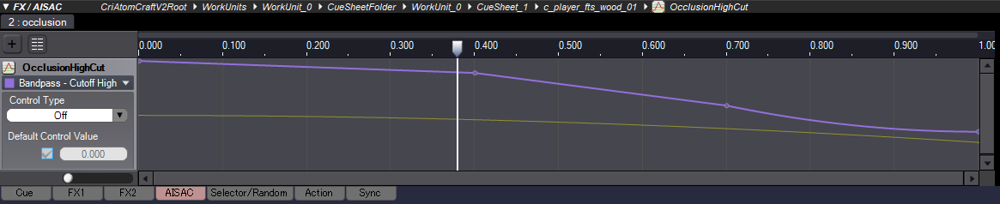

Overview
The following explains how to make use of ADX2's occlusion settings.
Setting Up Occlusion Using an AISAC
Occlusion values are sent to ADX2 using an AISAC, which can also be utilized to modulate the volume or high-cut filtering of a Cue. To create an AISAC for occlusion:
- Add an AISAC Control under Global Settings → AISAC-Controls in the Project/Globals tree and name it occlusion. Occlusion is calculated between 0-1 by default, with 1 being maximum occlusion.
- Right-click the Cue that should be occluded and select the New Object → Create AISAC... option.
- Give the AISAC a name of your choice in the Add AISAC window that opens, and set the AISAC Control (ID: Name) field to occlusion.

Add AISAC
Multiple AISACs can be combined using the same AISAC Control to create more complex behavior. For example, in this case, the occlusion parameter can be used to drive both the volume and high-cut cut-off frequency.

Occlusion cut-off